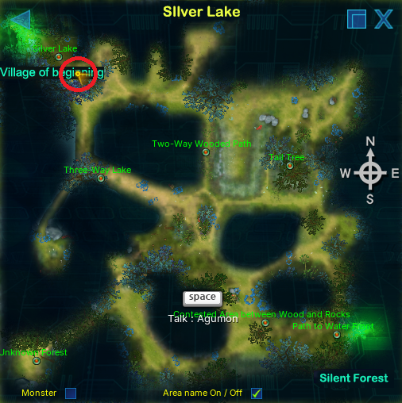
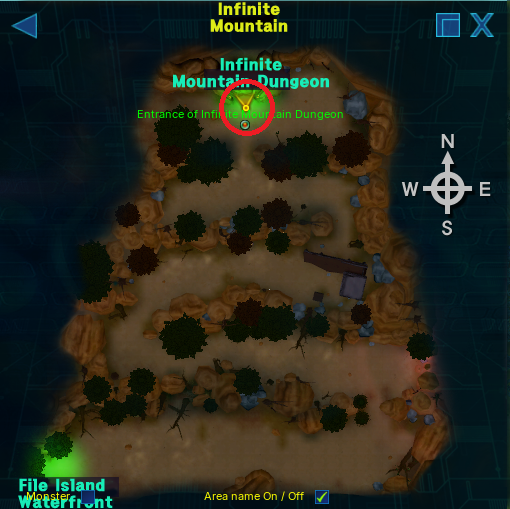

LEVEL 50 UNCAPNormal
Where to run Agumon's Madness and The Rise of the Fallen Angel for your first level uncaps - Odyssey Calc guidebook.


Opening guidebook… Continue here. Add ?stay=1 to preview without redirect.